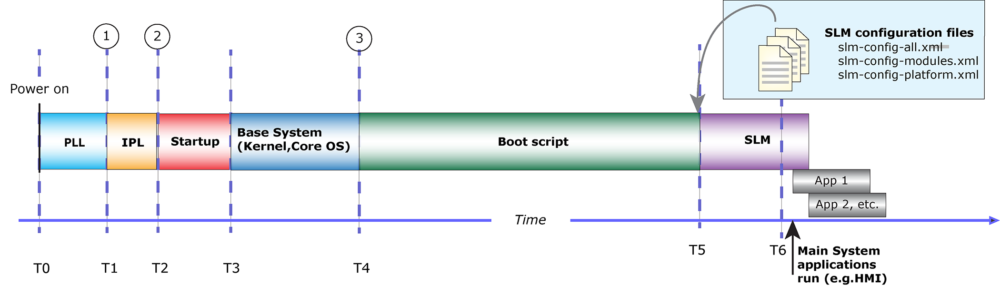

Before applying any of the techniques described here, always remember to get a stable baseline measurement of system boot speed.
With a stable baseline measurement, when you start making changes you can ensure that you're making real progress towards meeting your requirements.

The table that follows describes some of the techniques that you can use to measure times at these points in the bootup sequence:
| Start Time | Technique | Accuracy | Description | Pros and Cons |
|---|---|---|---|---|
| Before the IPL starts | Hardware lines and scope | Nanoseconds | Measures hardware lines (like CPU reset) and GPIO. | Same as above. |
| After the IPL starts and before the kernel is running | GPIO and scope | Nanoseconds | The customer code switches a GPIO pin on and off at various points in the code. A digital oscilloscope measures these level changes or pulses to determine the time between events. | Distinguishing different points is impossible. Requires a free GPIO in the hardware design, as well as a digital scope and significant setup. |
| After the startup driver starts and before the kernel is running | ClockCycles() (macro) | Nanoseconds | Not a function, but a macro that reads the CPU’s hardware counter directly. Gives the same result as the OS-level function of the same name, which is available after kernel boot. | Not supported on all architectures; works only if ClockCycles() is read directly from a hardware register, and not a derived value. |
| After the kernel is running | TraceEvent() | Microseconds | Uses the instrumented kernel and collects data with tracelogger or the IDE system profiler. Customer code is sprinkled with calls to the TraceEvent() function. | Can display grpahics when your process is executing, as well as all other system activity. The developer must set up the instrumented kernel. |
| After the kernel is running | time | Milliseconds | Command-line utility gives approximate execution time of a process. | Measurement is unavailable until the process in question terminates. |
| After the kernel is running | ClockCycles() | Nanoseconds | System function that uses a high-speed CPU counter to determine the number of clock cycles from power-on to the point when ClockCycles() is called. | Measures absolute time. Doesn’t necessarily reflect time spent in the measured process, since the kernel may have scheduled other threads during time of measurement. |
| After the kernel is running | slogf() / slog2info | Seconds | System logger function, used with slogger2. | Inaccurate timing; used mainly to determine sequence of events. |
tracelogger –n0 -s10
See the tracelogger documentation and the System Analysis Toolkit User's Guide for details on how to analyze the resulting .kev (kernel event trace) file.
#include <stdlib.h>
#include <stdio.h>
#include <sys/neutrino.h>
#include <sys/syspage.h>
#include <inttypes.h>
int main(int argc, char *argv[])
{
uint64_t timesinceboot_ms;
timesinceboot_ms = ClockCycles() * 1000UL /
SYSPAGE_ENTRY(qtime)->cycles_per_sec;
printf("ClockCycles()=%" PRIu64 " ms\n", timesinceboot_ms);
return EXIT_SUCCESS;
}
This technique lets you measure how long it takes your code to execute the IPL and startup phases. Normally, you would use the ClockCycles() value to measure relative time: you record the value of ClockCycles() at two points, then subtract the first value from the second value to get the duration of an event. In this case, however, we’re using ClockCycles() to measure the absolute time that has elapsed since the CPU power was applied.